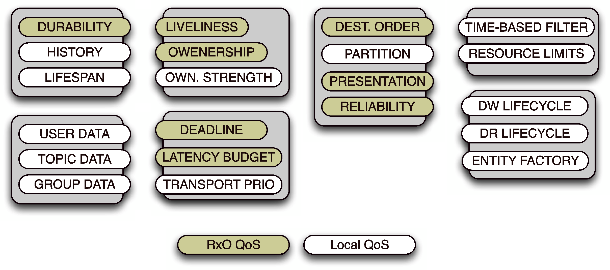
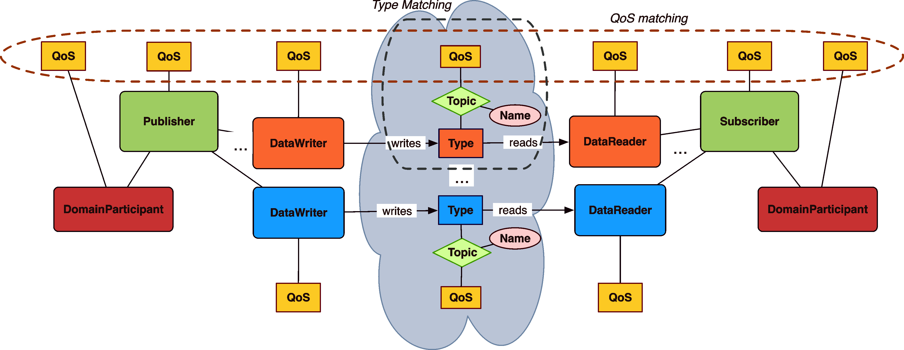

4. Quality of Service¶
4.1. The DDS QoS Model¶
DDS provides applications policies to control a wide set of non-functional properties, such as data availability, data delivery, data timeliness and resource usage. The figure below shows the full list of QoS policies available.
DDS QoS Policies
{kind=link}
The semantics and the behaviour of entities, such as a topic, data reader, and data writer, can be controlled through available QoS policies. The policies that control an end-to-end property are considered as part of the subscription matching.
DDS Request vs. Offer QoS Model
{kind=link}
DDS uses a ‘request vs. offer’ QoS-matching approach, as shown in the figure DDS Request vs. Offer QoS Model in which a data reader matches a data writer if and only if the QoS it is requesting for the given topic does not exceed (i.e. it is no more stringent than) the QoS with which the data is produced by the data writer. DDS subscriptions are matched against the topic type and name, as well as against the QoS being offered and requested by data writers and readers.
This DDS matching mechanism ensures that:
- types are preserved end-to-end due to the topic type matching, and
- end-to-end QoS invariants are also preserved.
The remainder of this chapter describes the most important QoS policies in DDS.
4.1.1. Data availability¶
DDS provides the following QoS policies that control the availability of data to domain participants:
The DURABILITY policy controls the lifetime of the data written to the global data space in a domain. Supported durability levels include:
- VOLATILE, which specifies that once data is published it is not maintained by DDS for delivery to late-joining applications;
- TRANSIENT_LOCAL, which specifies that publishers store data locally so that late-joining subscribers get the last-published item if a publisher is still alive;
- TRANSIENT, which ensures that the GDS maintains the information outside the local scope of any publishers for use by late-joining subscribers; and
- PERSISTENT, which ensures that the GDS stores the information persistently so to make it available to late joiners even after the shutdown and restart of the whole system.
Durability is achieved by relying on a durability service whose properties are configured by means of the DURABILITY_SERVICE QoS of non-volatile topics.
The LIFESPAN QoS policy controls the interval of time during which a data sample is valid. The default value is infinite, with alternative values being the time-span for which the data can be considered valid.
The HISTORY QoS policy controls the number of data samples (i.e. subsequent writes of the same topic) that must be stored for readers or writers. Possible values are the last sample, the last n samples, or all samples.
These DDS data availability QoS policies decouple applications in time and space. They also enable these applications to cooperate in highly dynamic environments characterized by continuous joining and leaving of publishers and subscribers. Such properties are particularly relevant in Systems-of-Systems (SoS) since they increase the decoupling of the component parts.
4.1.2. Data delivery¶
DDS provides the following QoS policies that control how data is delivered and how publishers can claim exclusive rights on data updates:
- The PRESENTATION QoS policy gives control on how changes to the information model are presented to subscribers. This QoS gives control of the ordering as well as the coherency of data updates. The scope at which it is applied is defined by the access scope, which can be one of INSTANCE, TOPIC, or GROUP level.
- The RELIABILITY QoS policy controls the level of reliability associated with data diffusion. Possible choices are RELIABLE and BEST_EFFORT distribution.
- The PARTITION QoS policy gives control over the association between DDS partitions (represented by a string name) and a specific instance of a publisher/subscriber. This association provides DDS implementations with an abstraction that allow segregation of traffic generated by different partitions, thereby improving overall system scalability and performance.
- The DESTINATION_ORDER QoS policy controls the order of changes made by publishers to some instance of a given topic. DDS allows the ordering of different changes according to source or destination timestamps.
- The OWNERSHIP QoS policy controls which writer ‘owns’ the write-access to a topic when there are multiple writers and ownership is EXCLUSIVE. Only the writer with the highest OWNERSHIP_STRENGTH can publish the data. If the OWNERSHIP QoS policy value is shared, multiple writers can concurrently update a topic. OWNERSHIP thus helps to manage replicated publishers of the same data.
These DDS data delivery QoS policies control the reliability and availability of data, thereby allowing the delivery of the right data to the right place at the right time. More elaborate ways of selecting the right data are offered by the DDS content-awareness profile, which allows applications to select information of interest based upon their content. These QoS policies are particularly useful in SoS since they can be used to finely tune how and to whom data is delivered, thus limiting not only the amount of resources used, but also minimizing the level of interference by independent data streams.
4.1.3. Data timeliness¶
DDS provides the following QoS policies to control the timeliness properties of distributed data:
- The DEADLINE QoS policy allows applications to define the maximum inter-arrival time for data. DDS can be configured to automatically notify applications when deadlines are missed.
- The LATENCY_BUDGET QoS policy provides a means for applications to inform DDS of the urgency associated with transmitted data. The latency budget specifies the time period within which DDS must distribute the information. This time period starts from the moment the data is written by a publisher until it is available in the subscriber’s data-cache ready for use by readers.
- The TRANSPORT_PRIORITY QoS policy allows applications to control the importance associated with a topic or with a topic instance, thus allowing a DDS implementation to prioritize more important data relative to less important data. These QoS policies help ensure that mission-critical information needed to reconstruct the shared operational picture is delivered in a timely manner.
These DDS data timeliness QoS policies provide control over the temporal properties of data. Such properties are particularly relevant in SoS since they can be used to define and control the temporal aspects of various subsystem data exchanges, whilst ensuring that bandwidth is exploited optimally.
4.1.4. Resources¶
DDS defines the following QoS policies to control the network and computing resources that are essential to meet data dissemination requirements:
- The TIME_BASED_FILTER QoS policy allows applications to specify the minimum inter-arrival time between data samples, thereby expressing their capability to consume information at a maximum rate. Samples that are produced at a faster pace are not delivered. This policy helps a DDS implementation optimize network bandwidth, memory, and processing power for subscribers that are connected over limited-bandwidth networks or which have limited computing capabilities.
- The RESOURCE_LIMITS QoS policy allows applications to control the maximum available storage to hold topic instances and a related number of historical samples. DDS’s QoS policies support the various elements and operating scenarios that constitute net-centric mission-critical information management. By controlling these QoS policies it is possible to scale DDS from low-end embedded systems connected with narrow and noisy radio links, to high-end servers connected to high-speed fiber-optic networks.
These DDS resource QoS policies provide control over the local and end-to-end resources, such as memory and network bandwidth. Such properties are particularly relevant in SoS since they are characterized by largely heterogeneous subsystems, devices, and network connections that often require down-sampling, as well as overall limits on the amount of resources used.
4.1.5. Configuration¶
The QoS policies described above provide control over the most important aspects of data delivery, availability, timeliness, and resource usage. DDS also supports the definition and distribution of user-specified bootstrapping information via the following QoS policies:
- The USER_DATA QoS policy allows applications to associate a sequence of octets to domain participants, data readers and data writers. This data is then distributed by means of a built-in topic. This QoS policy is commonly used to distribute security credentials.
- The TOPIC_DATA QoS policy allows applications to associate a sequence of octets with a topic. This bootstrapping information is distributed by means of a built-in topic. A common use of this QoS policy is to extend topics with additional information, or meta-information, such as IDL type-codes or XML schemas.
- The GROUP_DATA QoS policy allows applications to associate a sequence of octets with publishers and subscribers; this bootstrapping information is distributed by means built-in topics. A typical use of this information is to allow additional application control over subscriptions matching.
These DDS configuration QoS policies provide useful a mechanism for bootstrapping and configuring applications that run in SoS. This mechanism is particularly relevant in SoS since it provides a fully-distributed means of providing configuration information.
4.1.6. Setting QoS¶
All the code examples you have have seen so far did rely on default QoS settings, so that we did not have to be concerned with defining the desired QoS. Setting QoS on DDS entities shows how you can create and set QoS on DDS entities.
// create a Domain Participant, -1 defaults to value defined in configuration file
dds::domain::DomainParticipant dp(-1);
dds::topic::qos::TopicQos topicQos
= dp.default_topic_qos()
<< dds::core::policy::Durability::Transient()
<< dds::core::policy::Reliability::Reliable();
dds::topic::Topic<tutorial::TempSensorType> topic(dp, "TempSensor", topicQos);
dds::pub::qos::PublisherQos pubQos
= dp.default_publisher_qos()
<< dds::core::policy::Partition("building-1:floor-2:room:3");
dds::pub::Publisher pub(dp, pubQos);
dds::pub::qos::DataWriterQos dwqos = topic.qos();
dds::core::policy::TransportPriority transportPriority(10);
dwqos << transportPriority;
dds::pub::DataWriter<tutorial::TempSensorType> dw(pub, topic, dwqos);
Along with an API to explicitly create QoS, DDS also provides the concept of a QoSProvider to make it possible to externalize the definition of the QoS and make it a deployment-time concern. The listing below shows how the QoSProvider can be used to fetch a QoS definition from a file.
dds::core::QosProvider qp("file://defaults.xml", "DDS DefaultQosProfile");
// create a Domain Participant, -1 defaults to value defined in configuration file
dds::domain::DomainParticipant dp(-1);
dds::topic::qos::TopicQos topicQos = qp.topic_qos();
dds::topic::Topic<tutorial::TempSensorType> topic(dp, "TempSensor", topicQos);
dds::pub::qos::PublisherQos pubQos = qp.publisher_qos();
dds::pub::Publisher pub(dp, pubQos);
dds::pub::qos::DataWriterQos dwqos = qp.datawriter_qos();
dds::pub::DataWriter<tutorial::TempSensorType> dw(pub, topic, dwqos);
4.2. Summary¶
This chapter has explained the role of QoS in DDS and shown how the various policies can be used to control the most important aspects of communication, data availability and resource usage. The code examples have also illustrated that setting QoS is pretty straightforward and the use of the QoSProvider can be of great help in making the selection of QoS a deployment concern.